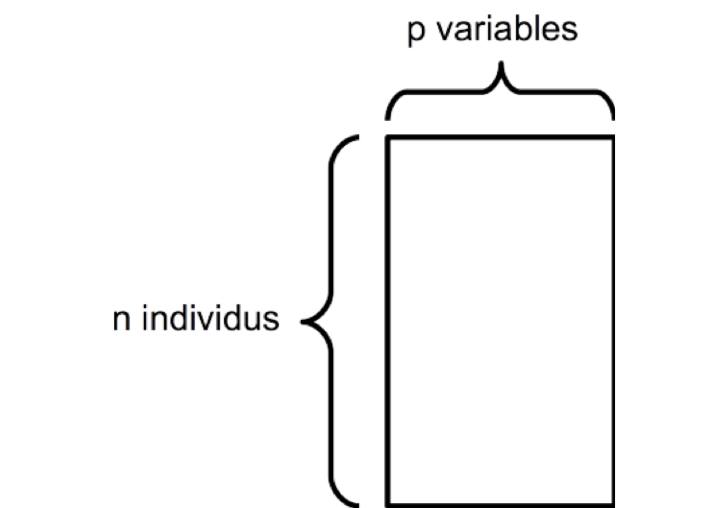
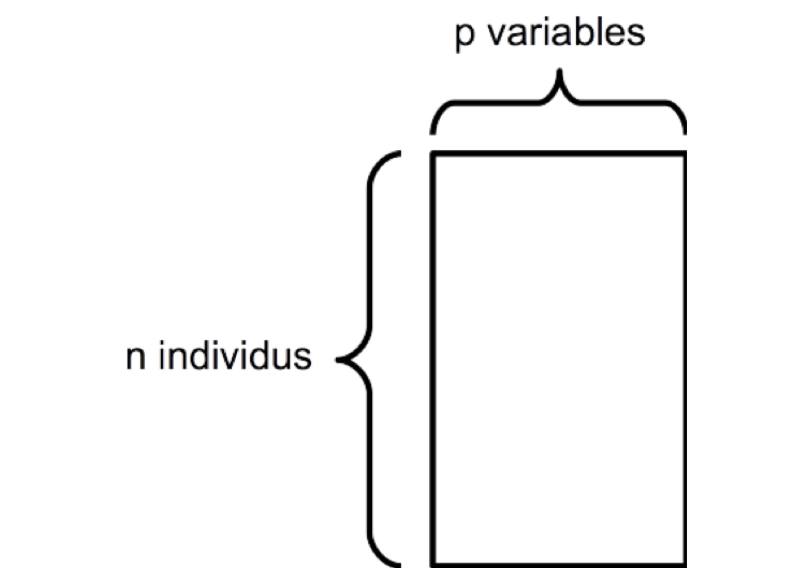
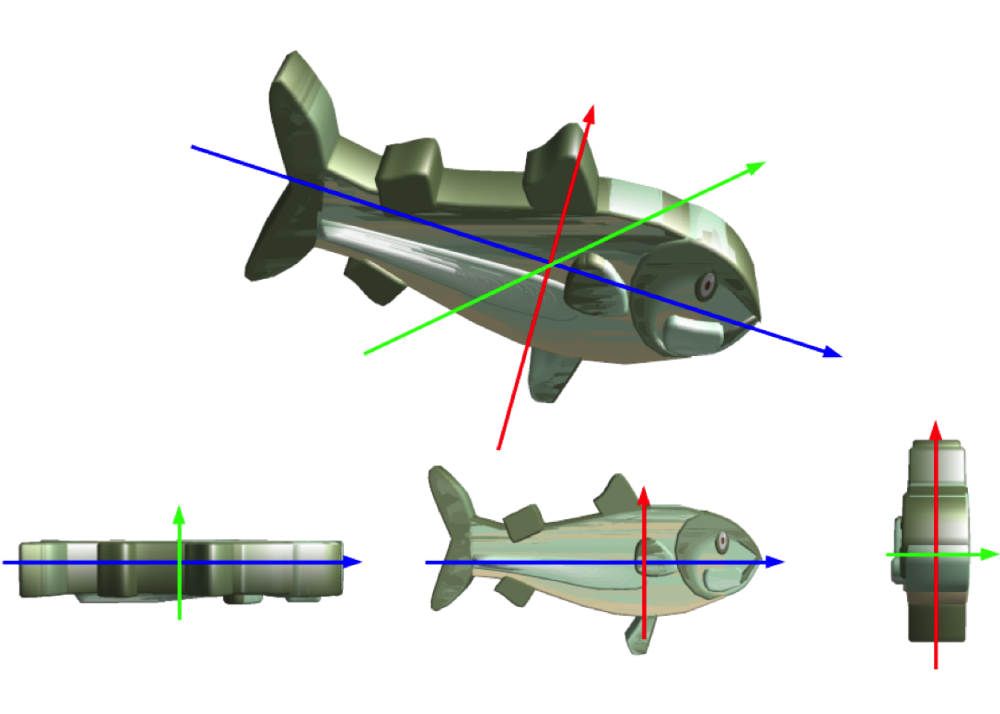
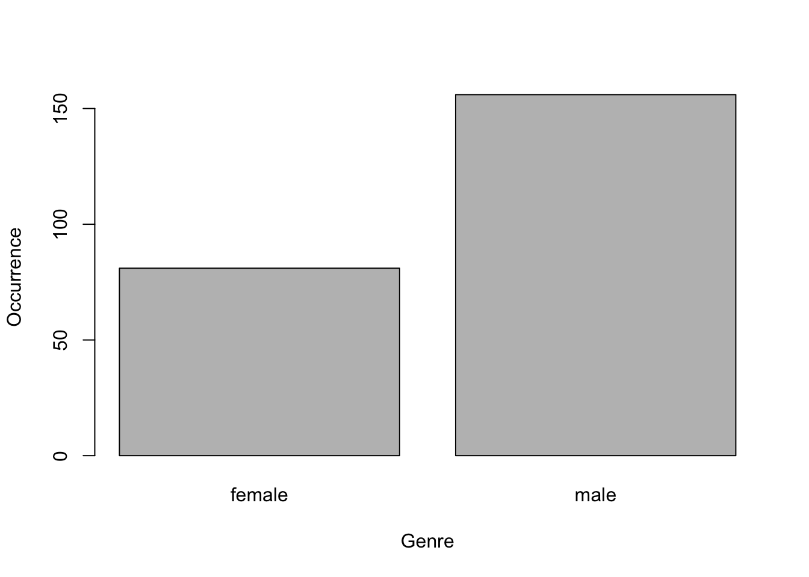

Objectif : décrire sans a priori un tableau de données constitué exclusivement de variables quantitatives.

2019-02-01
Objectif : décrire sans a priori un tableau de données constitué exclusivement de variables quantitatives.


L’ACP permet de déterminer :
Le principe de l'ACP :
Plusieurs variables corrélées :
Tous les points sont relativement proches de ce nouvel axe.
